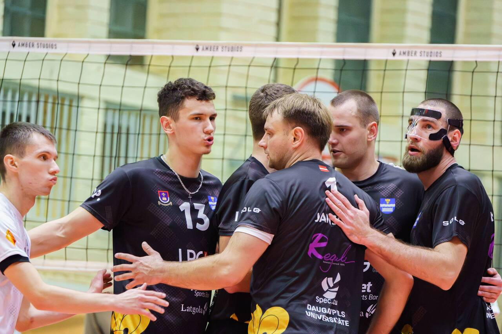
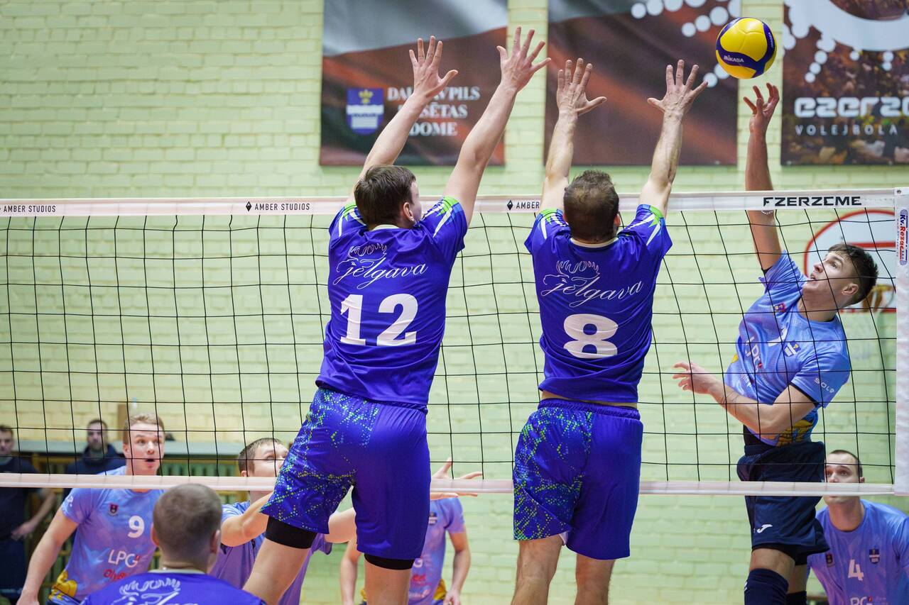
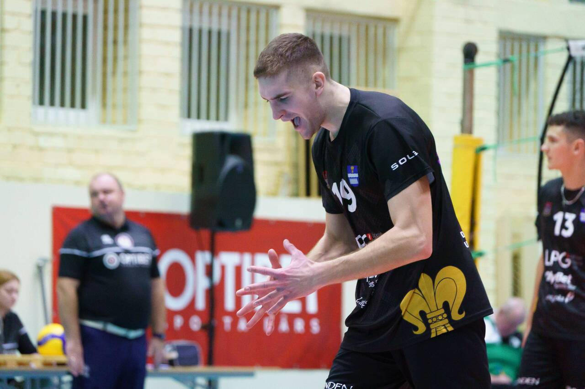
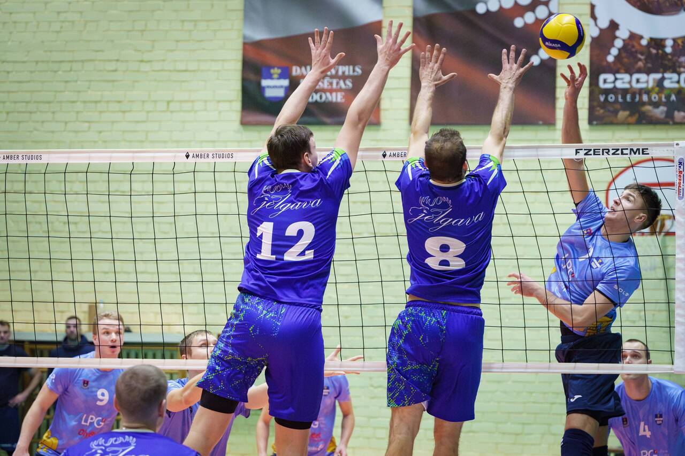
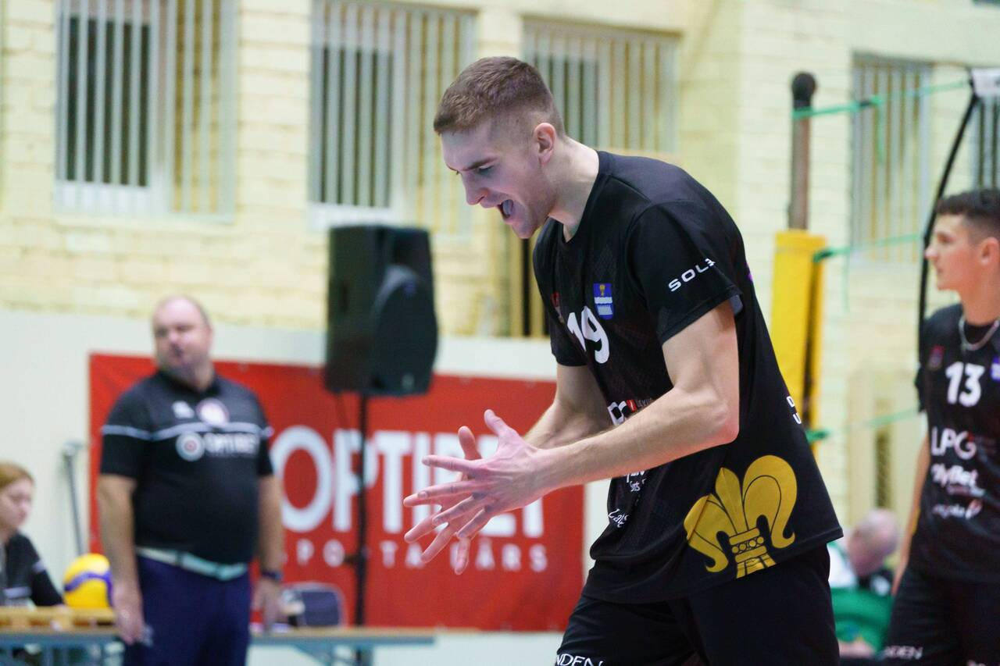
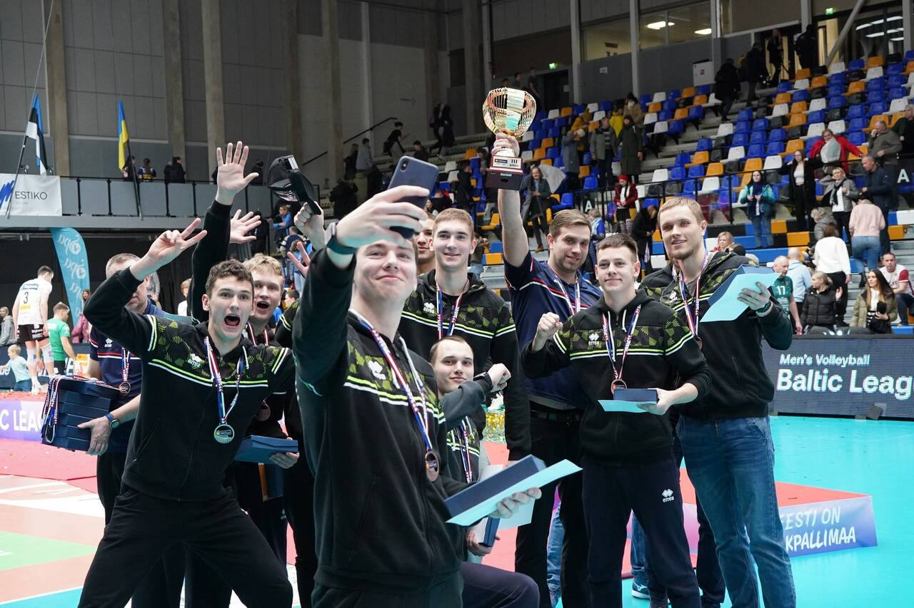
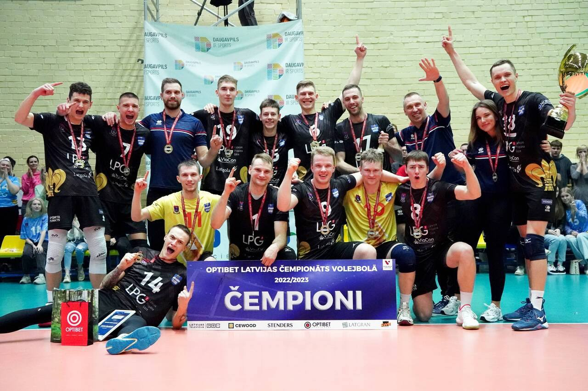

Jaunumi:
Optibet baltijas līgas turnīra tabula:

Ezerzeme/DU mājas spēlē svin uzvaru pār
Ezerzeme/DU volejbolisti tika Latvijas Cewood
Kārtejās spēlēs Baltijas līgā Ezerzeme/DU svin
Ezerzeme/DU mājas spēlē svin uzvaru pār
Jēkabpils Lūšiem 04.12.2023
Ezerzeme/DU volejbolisti tika Latvijas Cewood
kausa pusfinālā 01.12.2023
Kārtejās spēlēs Baltijas līgā Ezerzeme/DU svin
uzvaru pār RTU/Robežsardze/Jūrmala un Amber Volley
Mūsu panākumi:
2023.gada Optibet Superkausa iegūvēji
| Komands | Punkti | Spēles | ||
|---|---|---|---|---|
| Nospēlētas | Uzvarētas | Zaudētas | ||
| Selver/TalTech | 27 | 9 | 9 | 0 |
| Bigbank Tartu | 24 | 10 | 8 | 2 |
| Ezerzeme/Du | 17 | 10 | 6 | 4 |
| Barrus Voru VK | 15 | 10 | 6 | 4 |
| Amber Volley | 12 | 11 | 3 | 8 |
| Pārnu VK | 10 | 9 | 3 | 6 |
| RTU Robežsardze/Jūrmala | 9 | 11 | 3 | 8 |
| Jēkabpils Lūši | 6 | 10 | 2 | 8 |
2022./2023. gada Optibet Baltijas līga 3.vieta

2022./2023. gada Optibet Latvijas čempionāts volejbolā 1.vieta
